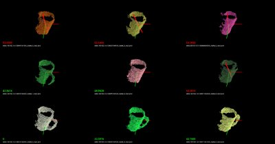
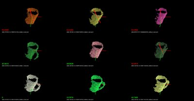

Cluster Recognition and 6DOF Pose Estimation using VFH descriptors
As previously described in Estimating VFH signatures for a set of points, Viewpoint Feature Histograms (VFH) are powerful meta-local descriptors, created for the purpose of recognition and pose estimation for clusters of points. We here refer to a cluster as a collection of 3D points, most of the time representing a particular object or part of a scene, obtained through some segmentation or detection mechanisms (please see Euclidean Cluster Extraction for an example).
Our goal here is not to provide an ultimate recognition tool, but rather a mechanism for obtaining candidates that could potentially be the cluster/object that is searched for, together with its 6DOF pose in space. With this in mind, we will be formulating the recognition problem as a nearest neighbor estimation problem. So given a set of training data, we will use efficient nearest neighbor search structures such as kd-trees and return a set of potential candidates with sorted distances to the query object, rather than an absolute “this is the object that we were searching for” kind of response. The reader can imagine that such a system becomes much more useful as we can explicitly reason about failures (false positives, or true negatives).
For the purpose of this tutorial, the application example could be formulated as follows:
Training stage:
given a scene with 1 object that is easily separable as a cluster;
use a ground-truth system to obtain its pose (see the discussion below);
rotate around the object or rotate the object with respect to the camera, and compute a VFH descriptor for each view;
store the views, and build a kd-tree representation.
Testing stage:
given a scene with objects that can be separated as individual clusters, first extract the clusters;
for each cluster, compute a VFH descriptor from the current camera position;
use the VFH descriptor to search for candidates in the trained kd-tree.
We hope the above makes sense. Basically we’re first going to create the set of objects that we try to later on recognize, and then we will use that to obtain valid candidates for objects in the scene.
A good example of a ground-truth system could be a simple rotating pan-tilt unit such as the one in the figure below. Placing an object on the unit, and moving it with some increments in both horizontal and vertical, can result in a perfect ground-truth system for small objects. A cheaper solution could be to use a marker-based system (e.g., checkerboard) and rotate the camera/table manually.

Our Kd-Tree implementation of choice for the purpose of this tutorial is of course, FLANN.
Training
We begin the training by assuming that the objects are already separated as individual clusters (see Euclidean Cluster Extraction), as shown in the figure below:
Since we’re only trying to cover the explicit training/testing of VFH signatures in this tutorial, we provide a set of datasets already collected at: vfh_recognition_tutorial_data.tbz. The data is a subset of the objects presented in the figure below (left), and look like the point clouds on the right. We used the pan-tilt table shown above to acquire the data.

Next, copy and paste the following code into your editor and save it as
build_tree.cpp.
1#include <pcl/point_types.h>
2#include <pcl/point_cloud.h>
3#include <pcl/common/pcl_filesystem.h>
4#include <pcl/console/print.h>
5#include <pcl/io/pcd_io.h>
6
7#include <flann/flann.h>
8#include <flann/io/hdf5.h>
9#include <fstream>
10
11
12typedef std::pair<std::string, std::vector<float> > vfh_model;
13
14/** \brief Loads an n-D histogram file as a VFH signature
15 * \param path the input file name
16 * \param vfh the resultant VFH model
17 */
18bool
19loadHist (const pcl_fs::path &path, vfh_model &vfh)
20{
21 int vfh_idx;
22 // Load the file as a PCD
23 try
24 {
25 pcl::PCLPointCloud2 cloud;
26 int version;
27 Eigen::Vector4f origin;
28 Eigen::Quaternionf orientation;
29 pcl::PCDReader r;
30 int type; unsigned int idx;
31 r.readHeader (path.string (), cloud, origin, orientation, version, type, idx);
32
33 vfh_idx = pcl::getFieldIndex (cloud, "vfh");
34 if (vfh_idx == -1)
35 return (false);
36 if ((int)cloud.width * cloud.height != 1)
37 return (false);
38 }
39 catch (const pcl::InvalidConversionException&)
40 {
41 return (false);
42 }
43
44 // Treat the VFH signature as a single Point Cloud
45 pcl::PointCloud <pcl::VFHSignature308> point;
46 pcl::io::loadPCDFile (path.string (), point);
47 vfh.second.resize (308);
48
49 std::vector <pcl::PCLPointField> fields;
50 pcl::getFieldIndex<pcl::VFHSignature308> ("vfh", fields);
51
52 for (std::size_t i = 0; i < fields[vfh_idx].count; ++i)
53 {
54 vfh.second[i] = point[0].histogram[i];
55 }
56 vfh.first = path.string ();
57 return (true);
58}
59
60/** \brief Load a set of VFH features that will act as the model (training data)
61 * \param argc the number of arguments (pass from main ())
62 * \param argv the actual command line arguments (pass from main ())
63 * \param extension the file extension containing the VFH features
64 * \param models the resultant vector of histogram models
65 */
66void
67loadFeatureModels (const pcl_fs::path &base_dir, const std::string &extension,
68 std::vector<vfh_model> &models)
69{
70 if (!pcl_fs::exists (base_dir) && !pcl_fs::is_directory (base_dir))
71 return;
72
73 for (pcl_fs::directory_iterator it (base_dir); it != pcl_fs::directory_iterator (); ++it)
74 {
75 if (pcl_fs::is_directory (it->status ()))
76 {
77 std::stringstream ss;
78 ss << it->path ();
79 pcl::console::print_highlight ("Loading %s (%lu models loaded so far).\n", ss.str ().c_str (), (unsigned long)models.size ());
80 loadFeatureModels (it->path (), extension, models);
81 }
82 if (pcl_fs::is_regular_file (it->status ()) && it->path ().extension ().string () == extension)
83 {
84 vfh_model m;
85 if (loadHist (base_dir / it->path ().filename (), m))
86 models.push_back (m);
87 }
88 }
89}
90
91int
92main (int argc, char** argv)
93{
94 if (argc < 2)
95 {
96 PCL_ERROR ("Need at least two parameters! Syntax is: %s [model_directory] [options]\n", argv[0]);
97 return (-1);
98 }
99
100 std::string extension (".pcd");
101 transform (extension.begin (), extension.end (), extension.begin (), (int(*)(int))tolower);
102
103 std::string kdtree_idx_file_name = "kdtree.idx";
104 std::string training_data_h5_file_name = "training_data.h5";
105 std::string training_data_list_file_name = "training_data.list";
106
107 std::vector<vfh_model> models;
108
109 // Load the model histograms
110 loadFeatureModels (argv[1], extension, models);
111 pcl::console::print_highlight ("Loaded %d VFH models. Creating training data %s/%s.\n",
112 (int)models.size (), training_data_h5_file_name.c_str (), training_data_list_file_name.c_str ());
113
114 // Convert data into FLANN format
115 flann::Matrix<float> data (new float[models.size () * models[0].second.size ()], models.size (), models[0].second.size ());
116
117 for (std::size_t i = 0; i < data.rows; ++i)
118 for (std::size_t j = 0; j < data.cols; ++j)
119 data[i][j] = models[i].second[j];
120
121 // Save data to disk (list of models)
122 flann::save_to_file (data, training_data_h5_file_name, "training_data");
123 std::ofstream fs;
124 fs.open (training_data_list_file_name.c_str ());
125 for (std::size_t i = 0; i < models.size (); ++i)
126 fs << models[i].first << "\n";
127 fs.close ();
128
129 // Build the tree index and save it to disk
130 pcl::console::print_error ("Building the kdtree index (%s) for %d elements...\n", kdtree_idx_file_name.c_str (), (int)data.rows);
131 flann::Index<flann::ChiSquareDistance<float> > index (data, flann::LinearIndexParams ());
132 //flann::Index<flann::ChiSquareDistance<float> > index (data, flann::KDTreeIndexParams (4));
133 index.buildIndex ();
134 index.save (kdtree_idx_file_name);
135 delete[] data.ptr ();
136
137 return (0);
138}
In the following paragraphs we will explain what the above code does (or should
do). We’ll begin with the main function.
We begin by loading a set of feature models from a directory given as the first
command line argument (see details for running the example below). The
loadFeatureModels method does nothing but recursively traverse a set of
directories and subdirectories, and loads in all .PCD files it finds. In
loadFeatureModels, we call loadHist, which will attempt to open each
PCD file found, read its header, and check whether it contains a VFH signature
or not. Together with the VFH signature we also store the PCD file name into a
vfh_model pair.
Once all VFH features have been loaded, we convert them to FLANN format, using:
// Convert data into FLANN format
flann::Matrix<float> data (new float[models.size () * models[0].second.size ()], models.size (), models[0].second.size ());
for (std::size_t i = 0; i < data.rows; ++i)
for (std::size_t j = 0; j < data.cols; ++j)
data[i][j] = models[i].second[j];
Since we’re lazy, and we want to use this data (and not reload it again by crawling the directory structure in the testing phase), we dump the data to disk:
// Save data to disk (list of models)
flann::save_to_file (data, training_data_h5_file_name, "training_data");
std::ofstream fs;
fs.open (training_data_list_file_name.c_str ());
for (std::size_t i = 0; i < models.size (); ++i)
fs << models[i].first << "\n";
fs.close ();
Finally, we create the KdTree, and save its structure to disk:
pcl::console::print_error ("Building the kdtree index (%s) for %d elements...\n", kdtree_idx_file_name.c_str (), (int)data.rows);
flann::Index<flann::ChiSquareDistance<float> > index (data, flann::LinearIndexParams ());
//flann::Index<flann::ChiSquareDistance<float> > index (data, flann::KDTreeIndexParams (4));
index.buildIndex ();
index.save (kdtree_idx_file_name);
Here we will use a LinearIndex, which does a brute-force search using a
Chi-Square distance metric (see [VFH] for more information). For building a
proper kd-tree, comment line 1 and uncomment line 2 in the code snippet above.
The most important difference between a LinearIndex and a KDTreeIndex in FLANN
is that the KDTree will be much faster, while producing approximate nearest
neighbor results, rather than absolute.
So, we’re done with training. To summarize:
we crawled a directory structure, looked at all the .PCD files we found, tested them whether they are VFH signatures and loaded them in memory;
we converted the data into FLANN format and dumped it to disk;
we built a kd-tree structure and dumped it to disk.
Testing
In the testing phase, we will illustrate how the system works by randomly loading one of the files used in the training phase (feel free to supply your own file here!), and checking the results of the tree.
Begin by copying and pasting the following code into your editor and save it as
nearest_neighbors.cpp.
1#include <pcl/point_types.h>
2#include <pcl/point_cloud.h>
3#include <pcl/common/common.h>
4#include <pcl/common/centroid.h> // for compute3DCentroid
5#include <pcl/visualization/pcl_visualizer.h>
6#include <pcl/common/pcl_filesystem.h>
7#include <pcl/console/parse.h>
8#include <pcl/console/print.h>
9#include <pcl/io/pcd_io.h>
10#include <iostream>
11#include <limits>
12#include <flann/flann.h>
13#include <flann/io/hdf5.h>
14
15#include <boost/algorithm/string/replace.hpp> // for replace_last
16typedef std::pair<std::string, std::vector<float> > vfh_model;
17
18/** \brief Loads an n-D histogram file as a VFH signature
19 * \param path the input file name
20 * \param vfh the resultant VFH model
21 */
22bool
23loadHist (const pcl_fs::path &path, vfh_model &vfh)
24{
25 int vfh_idx;
26 // Load the file as a PCD
27 try
28 {
29 pcl::PCLPointCloud2 cloud;
30 int version;
31 Eigen::Vector4f origin;
32 Eigen::Quaternionf orientation;
33 pcl::PCDReader r;
34 int type; unsigned int idx;
35 r.readHeader (path.string (), cloud, origin, orientation, version, type, idx);
36
37 vfh_idx = pcl::getFieldIndex (cloud, "vfh");
38 if (vfh_idx == -1)
39 return (false);
40 if ((int)cloud.width * cloud.height != 1)
41 return (false);
42 }
43 catch (const pcl::InvalidConversionException&)
44 {
45 return (false);
46 }
47
48 // Treat the VFH signature as a single Point Cloud
49 pcl::PointCloud <pcl::VFHSignature308> point;
50 pcl::io::loadPCDFile (path.string (), point);
51 vfh.second.resize (308);
52
53 std::vector <pcl::PCLPointField> fields;
54 pcl::getFieldIndex<pcl::VFHSignature308> ("vfh", fields);
55
56 for (std::size_t i = 0; i < fields[vfh_idx].count; ++i)
57 {
58 vfh.second[i] = point[0].histogram[i];
59 }
60 vfh.first = path.string ();
61 return (true);
62}
63
64
65/** \brief Search for the closest k neighbors
66 * \param index the tree
67 * \param model the query model
68 * \param k the number of neighbors to search for
69 * \param indices the resultant neighbor indices
70 * \param distances the resultant neighbor distances
71 */
72inline void
73nearestKSearch (flann::Index<flann::ChiSquareDistance<float> > &index, const vfh_model &model,
74 int k, flann::Matrix<int> &indices, flann::Matrix<float> &distances)
75{
76 // Query point
77 flann::Matrix<float> p = flann::Matrix<float>(new float[model.second.size ()], 1, model.second.size ());
78 memcpy (&p.ptr ()[0], &model.second[0], p.cols * p.rows * sizeof (float));
79
80 indices = flann::Matrix<int>(new int[k], 1, k);
81 distances = flann::Matrix<float>(new float[k], 1, k);
82 index.knnSearch (p, indices, distances, k, flann::SearchParams (512));
83 delete[] p.ptr ();
84}
85
86/** \brief Load the list of file model names from an ASCII file
87 * \param models the resultant list of model name
88 * \param filename the input file name
89 */
90bool
91loadFileList (std::vector<vfh_model> &models, const std::string &filename)
92{
93 std::ifstream fs;
94 fs.open (filename.c_str ());
95 if (!fs.is_open () || fs.fail ())
96 return (false);
97
98 std::string line;
99 while (!fs.eof ())
100 {
101 std::getline (fs, line);
102 if (line.empty ())
103 continue;
104 vfh_model m;
105 m.first = line;
106 models.push_back (m);
107 }
108 fs.close ();
109 return (true);
110}
111
112int
113main (int argc, char** argv)
114{
115 int k = 6;
116
117 double thresh = std::numeric_limits<double>::max(); // No threshold, disabled by default
118
119 if (argc < 2)
120 {
121 pcl::console::print_error
122 ("Need at least three parameters! Syntax is: %s <query_vfh_model.pcd> [options] {kdtree.idx} {training_data.h5} {training_data.list}\n", argv[0]);
123 pcl::console::print_info (" where [options] are: -k = number of nearest neighbors to search for in the tree (default: ");
124 pcl::console::print_value ("%d", k); pcl::console::print_info (")\n");
125 pcl::console::print_info (" -thresh = maximum distance threshold for a model to be considered VALID (default: ");
126 pcl::console::print_value ("%f", thresh); pcl::console::print_info (")\n\n");
127 return (-1);
128 }
129
130 std::string extension (".pcd");
131 transform (extension.begin (), extension.end (), extension.begin (), (int(*)(int))tolower);
132
133 // Load the test histogram
134 std::vector<int> pcd_indices = pcl::console::parse_file_extension_argument (argc, argv, ".pcd");
135 vfh_model histogram;
136 if (!loadHist (argv[pcd_indices.at (0)], histogram))
137 {
138 pcl::console::print_error ("Cannot load test file %s\n", argv[pcd_indices.at (0)]);
139 return (-1);
140 }
141
142 pcl::console::parse_argument (argc, argv, "-thresh", thresh);
143 // Search for the k closest matches
144 pcl::console::parse_argument (argc, argv, "-k", k);
145 pcl::console::print_highlight ("Using "); pcl::console::print_value ("%d", k); pcl::console::print_info (" nearest neighbors.\n");
146
147 std::string kdtree_idx_file_name = "kdtree.idx";
148 std::string training_data_h5_file_name = "training_data.h5";
149 std::string training_data_list_file_name = "training_data.list";
150
151 std::vector<vfh_model> models;
152 flann::Matrix<int> k_indices;
153 flann::Matrix<float> k_distances;
154 flann::Matrix<float> data;
155 // Check if the data has already been saved to disk
156 if (!pcl_fs::exists ("training_data.h5") || !pcl_fs::exists ("training_data.list"))
157 {
158 pcl::console::print_error ("Could not find training data models files %s and %s!\n",
159 training_data_h5_file_name.c_str (), training_data_list_file_name.c_str ());
160 return (-1);
161 }
162 else
163 {
164 loadFileList (models, training_data_list_file_name);
165 flann::load_from_file (data, training_data_h5_file_name, "training_data");
166 pcl::console::print_highlight ("Training data found. Loaded %d VFH models from %s/%s.\n",
167 (int)data.rows, training_data_h5_file_name.c_str (), training_data_list_file_name.c_str ());
168 }
169
170 // Check if the tree index has already been saved to disk
171 if (!pcl_fs::exists (kdtree_idx_file_name))
172 {
173 pcl::console::print_error ("Could not find kd-tree index in file %s!", kdtree_idx_file_name.c_str ());
174 return (-1);
175 }
176 else
177 {
178 flann::Index<flann::ChiSquareDistance<float> > index (data, flann::SavedIndexParams ("kdtree.idx"));
179 index.buildIndex ();
180 nearestKSearch (index, histogram, k, k_indices, k_distances);
181 }
182
183 // Output the results on screen
184 pcl::console::print_highlight ("The closest %d neighbors for %s are:\n", k, argv[pcd_indices[0]]);
185 for (int i = 0; i < k; ++i)
186 pcl::console::print_info (" %d - %s (%d) with a distance of: %f\n",
187 i, models.at (k_indices[0][i]).first.c_str (), k_indices[0][i], k_distances[0][i]);
188
189 // Load the results
190 pcl::visualization::PCLVisualizer p (argc, argv, "VFH Cluster Classifier");
191 int y_s = (int)std::floor (sqrt ((double)k));
192 int x_s = y_s + (int)std::ceil ((k / (double)y_s) - y_s);
193 double x_step = (double)(1 / (double)x_s);
194 double y_step = (double)(1 / (double)y_s);
195 pcl::console::print_highlight ("Preparing to load ");
196 pcl::console::print_value ("%d", k);
197 pcl::console::print_info (" files (");
198 pcl::console::print_value ("%d", x_s);
199 pcl::console::print_info ("x");
200 pcl::console::print_value ("%d", y_s);
201 pcl::console::print_info (" / ");
202 pcl::console::print_value ("%f", x_step);
203 pcl::console::print_info ("x");
204 pcl::console::print_value ("%f", y_step);
205 pcl::console::print_info (")\n");
206
207 int viewport = 0, l = 0, m = 0;
208 for (int i = 0; i < k; ++i)
209 {
210 std::string cloud_name = models.at (k_indices[0][i]).first;
211 boost::replace_last (cloud_name, "_vfh", "");
212
213 p.createViewPort (l * x_step, m * y_step, (l + 1) * x_step, (m + 1) * y_step, viewport);
214 l++;
215 if (l >= x_s)
216 {
217 l = 0;
218 m++;
219 }
220
221 pcl::PCLPointCloud2 cloud;
222 pcl::console::print_highlight (stderr, "Loading "); pcl::console::print_value (stderr, "%s ", cloud_name.c_str ());
223 if (pcl::io::loadPCDFile (cloud_name, cloud) == -1)
224 break;
225
226 // Convert from blob to PointCloud
227 pcl::PointCloud<pcl::PointXYZ> cloud_xyz;
228 pcl::fromPCLPointCloud2 (cloud, cloud_xyz);
229
230 if (cloud_xyz.size () == 0)
231 break;
232
233 pcl::console::print_info ("[done, ");
234 pcl::console::print_value ("%zu", static_cast<std::size_t>(cloud_xyz.size ()));
235 pcl::console::print_info (" points]\n");
236 pcl::console::print_info ("Available dimensions: ");
237 pcl::console::print_value ("%s\n", pcl::getFieldsList (cloud).c_str ());
238
239 // Demean the cloud
240 Eigen::Vector4f centroid;
241 pcl::compute3DCentroid (cloud_xyz, centroid);
242 pcl::PointCloud<pcl::PointXYZ>::Ptr cloud_xyz_demean (new pcl::PointCloud<pcl::PointXYZ>);
243 pcl::demeanPointCloud<pcl::PointXYZ> (cloud_xyz, centroid, *cloud_xyz_demean);
244 // Add to renderer*
245 p.addPointCloud (cloud_xyz_demean, cloud_name, viewport);
246
247 // Check if the model found is within our inlier tolerance
248 std::stringstream ss;
249 ss << k_distances[0][i];
250 if (k_distances[0][i] > thresh)
251 {
252 p.addText (ss.str (), 20, 30, 1, 0, 0, ss.str (), viewport); // display the text with red
253
254 // Create a red line
255 pcl::PointXYZ min_p, max_p;
256 pcl::getMinMax3D (*cloud_xyz_demean, min_p, max_p);
257 std::stringstream line_name;
258 line_name << "line_" << i;
259 p.addLine (min_p, max_p, 1, 0, 0, line_name.str (), viewport);
260 p.setShapeRenderingProperties (pcl::visualization::PCL_VISUALIZER_LINE_WIDTH, 5, line_name.str (), viewport);
261 }
262 else
263 p.addText (ss.str (), 20, 30, 0, 1, 0, ss.str (), viewport);
264
265 // Increase the font size for the score*
266 p.setShapeRenderingProperties (pcl::visualization::PCL_VISUALIZER_FONT_SIZE, 18, ss.str (), viewport);
267
268 // Add the cluster name
269 p.addText (cloud_name, 20, 10, cloud_name, viewport);
270 }
271 // Add coordinate systems to all viewports
272 p.addCoordinateSystem (0.1, "global", 0);
273
274 p.spin ();
275 return (0);
276}
The above code snippet is slightly larger, because we also included some visualization routines and some other “eye candy” stuff.
In lines:
std::vector<int> pcd_indices = pcl::console::parse_file_extension_argument (argc, argv, ".pcd");
vfh_model histogram;
if (!loadHist (argv[pcd_indices.at (0)], histogram))
{
pcl::console::print_error ("Cannot load test file %s\n", argv[pcd_indices.at (0)]);
return (-1);
}
pcl::console::parse_argument (argc, argv, "-thresh", thresh);
// Search for the k closest matches
pcl::console::parse_argument (argc, argv, "-k", k);
pcl::console::print_highlight ("Using "); pcl::console::print_value ("%d", k); pcl::console::print_info (" nearest neighbors.\n");
we load the first given user histogram (and ignore the rest). Then we proceed
at checking two command line parameters, namely -k which will define how
many nearest neighbors to check and display on screen, and -thresh which
defines a maximum distance metric after which we will start displaying red
lines (i.e., crossing) over the k models found on screen (eye candy!).
In lines:
loadFileList (models, training_data_list_file_name);
flann::load_from_file (data, training_data_h5_file_name, "training_data");
we load the training data from disk, together with the list of file names that
we previously stored in build_tree.cpp. Then, we read the kd-tree and rebuild the index:
flann::Index<flann::ChiSquareDistance<float> > index (data, flann::SavedIndexParams ("kdtree.idx"));
index.buildIndex ();
Here we need to make sure that we use the exact distance metric
(ChiSquareDistance in this case), as the one that we used while creating
the tree. The most important part of the code comes here:
nearestKSearch (index, histogram, k, k_indices, k_distances);
Inside nearestKSearch, we first convert the query point to FLANN format:
flann::Matrix<float> p = flann::Matrix<float>(new float[model.second.size ()], 1, model.second.size ());
memcpy (&p.ptr ()[0], &model.second[0], p.cols * p.rows * sizeof (float));
Followed by obtaining the resultant nearest neighbor indices and distances for the query in:
indices = flann::Matrix<int>(new int[k], 1, k);
distances = flann::Matrix<float>(new float[k], 1, k);
index.knnSearch (p, indices, distances, k, flann::SearchParams (512));
Lines:
index.buildIndex ();
nearestKSearch (index, histogram, k, k_indices, k_distances);
}
// Output the results on screen
pcl::console::print_highlight ("The closest %d neighbors for %s are:\n", k, argv[pcd_indices[0]]);
for (int i = 0; i < k; ++i)
pcl::console::print_info (" %d - %s (%d) with a distance of: %f\n",
i, models.at (k_indices[0][i]).first.c_str (), k_indices[0][i], k_distances[0][i]);
// Load the results
pcl::visualization::PCLVisualizer p (argc, argv, "VFH Cluster Classifier");
int y_s = (int)std::floor (sqrt ((double)k));
int x_s = y_s + (int)std::ceil ((k / (double)y_s) - y_s);
double x_step = (double)(1 / (double)x_s);
create a PCLVisualizer object, and sets up a set of different viewports (e.g., splits the screen into different chunks), which will be enabled in:
p.createViewPort (l * x_step, m * y_step, (l + 1) * x_step, (m + 1) * y_step, viewport);
Using the file names representing the models that we previously obtained in
loadFileList, we proceed at loading the model file names using:
pcl::PCLPointCloud2 cloud;
pcl::console::print_highlight (stderr, "Loading "); pcl::console::print_value (stderr, "%s ", cloud_name.c_str ());
if (pcl::io::loadPCDFile (cloud_name, cloud) == -1)
break;
// Convert from blob to PointCloud
pcl::PointCloud<pcl::PointXYZ> cloud_xyz;
pcl::fromPCLPointCloud2 (cloud, cloud_xyz);
For visualization purposes, we demean the point cloud by computing its centroid and then subtracting it:
Eigen::Vector4f centroid;
pcl::compute3DCentroid (cloud_xyz, centroid);
pcl::PointCloud<pcl::PointXYZ>::Ptr cloud_xyz_demean (new pcl::PointCloud<pcl::PointXYZ>);
pcl::demeanPointCloud<pcl::PointXYZ> (cloud_xyz, centroid, *cloud_xyz_demean);
// Add to renderer*
p.addPointCloud (cloud_xyz_demean, cloud_name, viewport);
Finally we check if the distance obtained by nearestKSearch is larger than the user given threshold, and if it is, we display a red line over the cloud that is being rendered in the viewport:
// Create a red line
pcl::PointXYZ min_p, max_p;
pcl::getMinMax3D (*cloud_xyz_demean, min_p, max_p);
std::stringstream line_name;
line_name << "line_" << i;
p.addLine (min_p, max_p, 1, 0, 0, line_name.str (), viewport);
p.setShapeRenderingProperties (pcl::visualization::PCL_VISUALIZER_LINE_WIDTH, 5, line_name.str (), viewport);
Compiling and running the code
Create a new CMakeLists.txt file, and put the following content into it
1cmake_minimum_required(VERSION 3.5 FATAL_ERROR)
2
3project(vfh_cluster_classifier)
4
5find_package(PCL 1.2 REQUIRED)
6include_directories(${PCL_INCLUDE_DIRS})
7link_directories(${PCL_LIBRARY_DIRS})
8add_definitions(${PCL_DEFINITIONS})
9
10find_package(HDF5 REQUIRED)
11find_package(FLANN REQUIRED)
12
13include_directories(SYSTEM
14 ${HDF5_INCLUDE_DIR}
15)
16
17add_executable(build_tree build_tree.cpp)
18target_link_libraries(build_tree ${PCL_LIBRARIES} ${Boost_LIBRARIES}
19 FLANN::FLANN ${HDF5_LIBRARIES})
20
21add_executable(nearest_neighbors nearest_neighbors.cpp)
22target_link_libraries(nearest_neighbors ${PCL_LIBRARIES} ${Boost_LIBRARIES} FLANN::FLANN ${HDF5_LIBRARIES})
Note
If you are running this tutorial on Windows, you have to install (HDF5 1.8.7 Shared Library). If CMake is not able to find HDF5, you can manually supply the include directory in HDF5_INCLUDE_DIR variable and the full path of hdf5dll.lib in HDF5_hdf5_LIBRARY variable. Make sure that the needed dlls are in the same folder as the executables.
The above assumes that your two source files (build_tree.cpp and nearest_neighbors.cpp) are stored into the src/ subdirectory.
Then, make sure that the datasets you downloaded (vfh_recognition_tutorial_data.tbz) are unpacked in this directory, thus creating a data/ subdirectory.
After you have made the executable, you can run them like so:
$ ./build/build_tree data/
You should see the following output on screen:
> Loading data/001.324.25 (0 models loaded so far).
> Loading data/800.919.49 (13 models loaded so far).
> Loading data/100.922.16 (27 models loaded so far).
> Loading data/901.125.07 (47 models loaded so far).
> Loading data/000.580.67 (65 models loaded so far).
> Loading data/463.156.00 (81 models loaded so far).
> Loading data/401.431.44 (97 models loaded so far).
> Loading data/100.919.00 (113 models loaded so far).
> Loading data/401.324.52 (134 models loaded so far).
> Loading data/201.327.78 (150 models loaded so far).
> Loading data/300.151.23 (166 models loaded so far).
> Loading data/200.921.07 (180 models loaded so far).
> Loaded 195 VFH models. Creating training data training_data.h5/training_data.list.
Building the kdtree index (kdtree.idx) for 195 elements...
The above crawled the data/ subdirectory, and created a kd-tree with 195 entries. To run the nearest neighbor testing example, you have two options:
Either run the following command manually, and select one of the datasets that we provided as a testing sample, like this:
./build/nearest_neighbors -k 16 -thresh 50 data/000.580.67/1258730231333_cluster_0_nxyz_vfh.pcdOr, if you are on a linux system, you can place the following on a bash script file (e.g.,
test.sh):#!/bin/bash # Example directory containing _vfh.pcd files DATA=data # Inlier distance threshold thresh=50 # Get the closest K nearest neighbors k=16 for i in `find $DATA -type d -name "*"` do echo $i for j in `find $i -type f \( -iname "*cluster*_vfh.pcd" \) | sort -R` do echo $j ./build/nearest_neighbors -k $k -thresh $thresh $j -cam "0.403137,0.868471/0,0,0/-0.0932051,-0.201608,-0.518939/-0.00471487,-0.931831,0.362863/1464,764/6,72" done doneand run the script like this:
bash test.sh
You should see recognition examples like the ones shown below:

 
